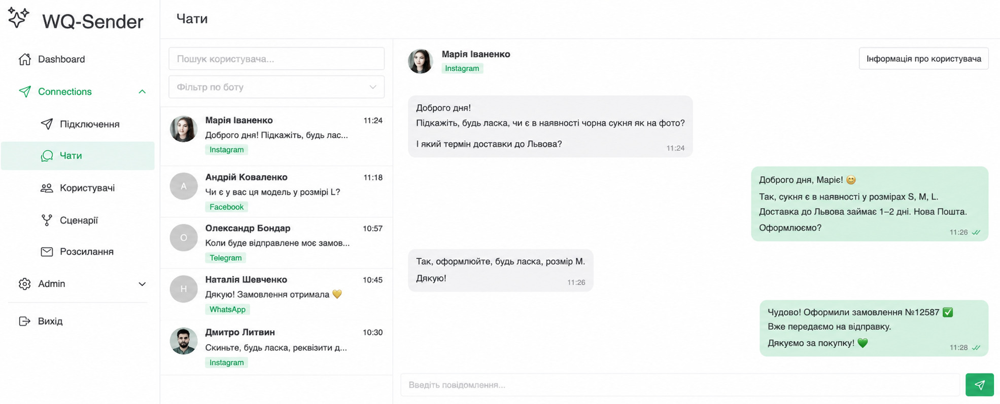
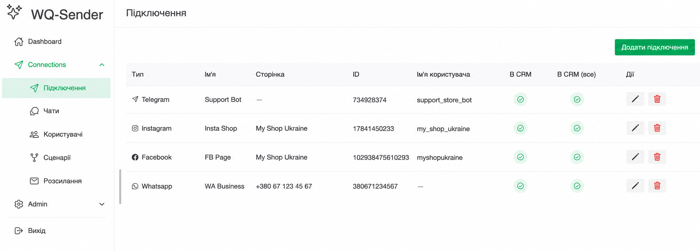
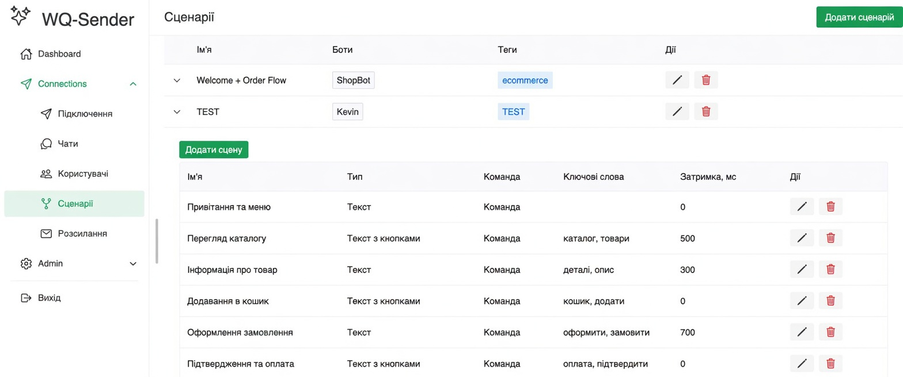
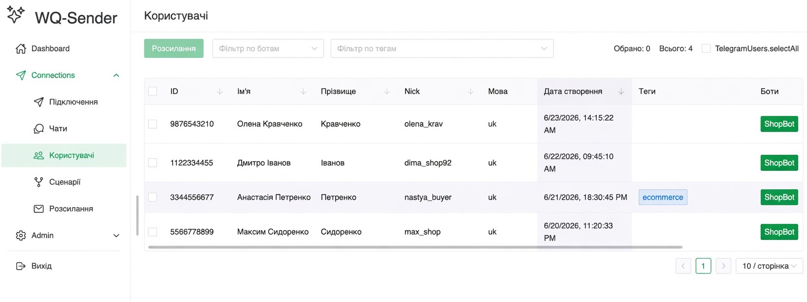
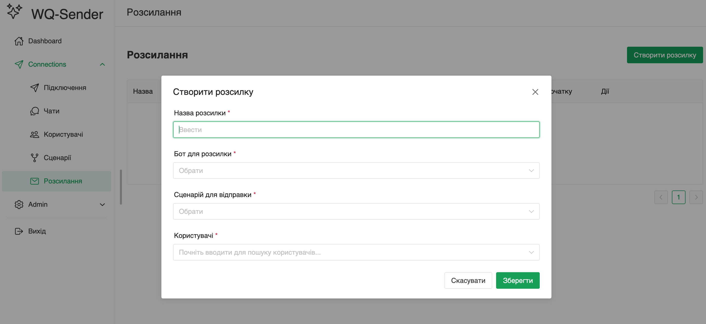

Єдина скринька чатів
Усі повідомлення з усіх каналів — в одному вікні. Ваша команда відповідає клієнтам швидко й не губить жодного діалогу.
Telegram, Instagram, Facebook Messenger і WhatsApp в одній скриньці. Автоматичні сценарії й воронки, єдина база клієнтів і розсилки. А незабаром — ШІ-оператор, що працює 24/7.
Підключайте канали, якими користуються ваші клієнти
Від першого повідомлення до автоматичної воронки та розсилки — без хаосу й перемикання між застосунками.
Усі повідомлення з усіх каналів — в одному вікні. Ваша команда відповідає клієнтам швидко й не губить жодного діалогу.
Створюйте автоматичні відповіді й повноцінні воронки. Клієнт проходить сценарій сам — без участі оператора, у будь-який час.
Сервіс автоматично збирає контакти з усіх каналів в одну базу з тегами, мовою та джерелом — готову до сегментації.
Налаштовуйте розсилки по сегментах бази: за каналом, тегами чи сценарієм. Повертайте клієнтів і робіть допродажі.
Без розробників і складних інтеграцій — підключаєтесь і починаєте спілкуватися.
Додайте Telegram, Instagram, Messenger чи WhatsApp у кілька кліків — усі діалоги одразу зʼявляться в сервісі.
Зберіть воронку з повідомлень, кнопок і умов. Автоматизуйте відповіді на типові запити та збір заявок.
Ведіть переписку в одному вікні, збирайте базу й запускайте розсилки, що повертають клієнтів.
Штучний інтелект, навчений на базі знань про ваш бізнес і реальних переписках. Він веде діалог із клієнтом як досвідчений оператор — тільки цілодобово й без вихідних.
Чати, користувачі, сценарії та розсилки — в одній панелі керування.





Напишіть нам — допоможемо підключитися та налаштувати перший сценарій. Це безкоштовно.